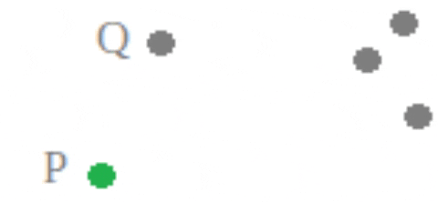
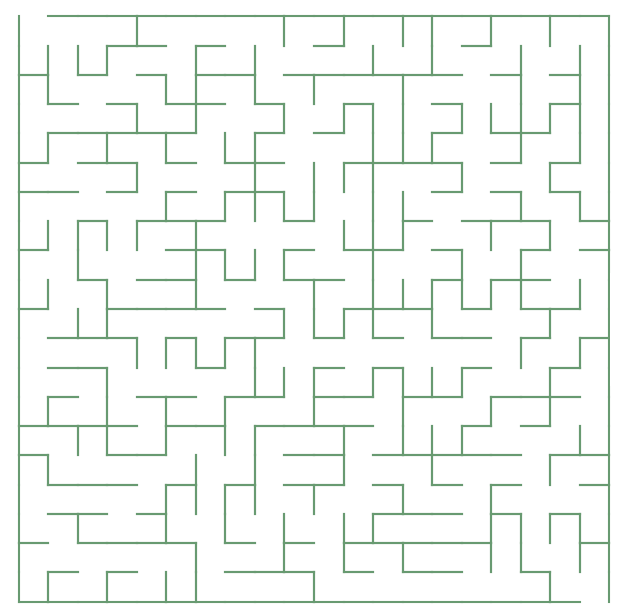
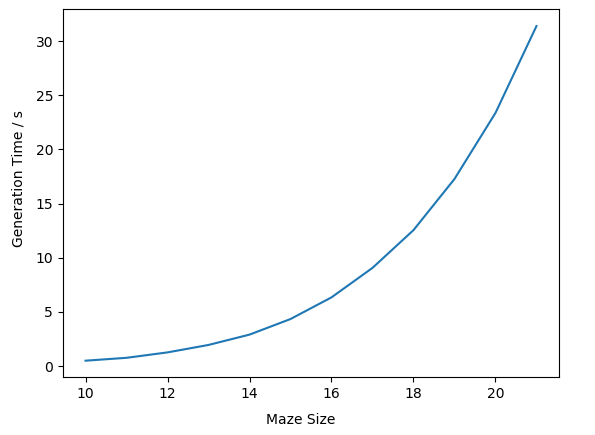
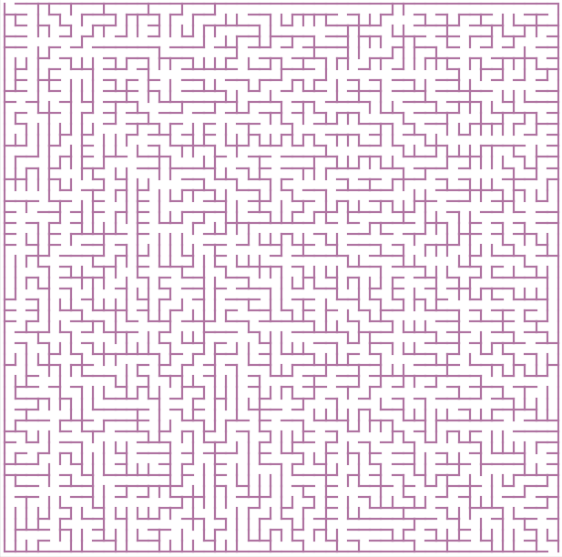
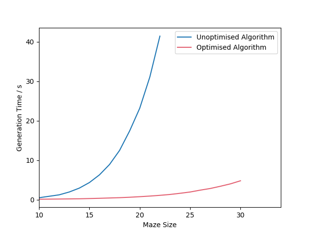

Maze Generation
Code for this project can be found here. Requires the matplotlib and numpy Python modules.
What is a maze?
Mazes are a type of puzzle in which you must find a path from one point (the start of the maze) to another point (the end of the maze). Mazes are almost as old as human civilisation itself - in Greek mythology, the fearsome Minotaur lived at the centre of a labyrinth on the island of Crete. Mazes have been around as long as humans could think to make them. However, when you try to design a maze by hand, you quickly realize that you need to be careful about how you draw the walls and corridors. If you don't do enough thinking, you could end up with a maze that has no solution, meaning that anyone who attempts to get through the maze is lost inside forever (assuming they can't leave through the entrance). Worse still, you could create a maze that's too easy to solve! This would leave anyone trying to solve the maze very unsatisfied at the lack of a challenge.
It would be nice if we had a way to create mazes that are guaranteed to never have these problems. In other words, we want a maze that is solveable, but only just - i.e. there is exactly one way to get from the start of the maze to the end. Luckily, today we have machines that are very good at following rules precisely - computers. With their help, we can generate mazes that are different every time, but do not suffer from the problems that we might encounter when creating our own mazes. There is a well-known algorithm in computer science that can help us here.
Prim's Algorithm
Prim's Algorithm is an algorithm that was developed by Czech mathematician Vojtěch Jarník in 1930, and later rediscovered by computer scientist Robert C. Prim in 1957. Given a set of points in a mathematical graph,
the algorithm creates a "minimum spanning tree". This is simply a way of connecting the points that meets the following conditions:
1. The sum of the edge weights (or the lengths of the lines connecting the points) is minimised. ("Minimum")
2. Any point in the graph can be reached from any other point. ("Spanning")
3. There is exactly one path from any point in the graph to any other point. ("Tree")
In graph theory, a "tree" is simply a graph in which there is exactly one path between any two points. Importantly, the algorithm also minimises the edge weights (or "line lengths") needed to connect all the points in this manner.
The algorithm creates such a graph using the following steps:
1. Choose a random point in the graph to begin the tree. This is the "seed point" from which the tree grows.
2. For a point P in the tree, find the nearest point Q that is not yet in the tree. Let the edge connecting these points be PQ.
3. Connect the points P (in the tree) and Q (not yet in the tree) for which the length of PQ is minimised. Thus Q is added to the tree.
4. Repeat steps 2 and 3 until all of the points are in the tree.
By going repeatedly through these four steps, all of the points are eventually connected. Furthermore, since we only ever add edges between points in the tree and points not in the tree, there are no "cycles", and so there is exactly one path between any two points, as desired.  In the GIF above, we can see this process in action. The algorithm starts the tree at the point P, though it could start anywhere. It then figures out that the closest point to P that is not yet in the tree is Q, so it connects Q to P. Now the tree consists of P and Q. The algorithm then connects Q to the nearest point on the right, since it is closer to Q than it is to P. This continues until all five points are connected.
Creating the Mazes
As it turns out, we can use Prim's algorithm to create mazes with the properties we were looking for. We can think of a maze as a grid of squares, where each square represents a position in the maze. If we connect these squares using Prim's algorithm, we will have a maze where every point is reachable by every other point. This is perfect, as it means there will be exactly one solution to get from the start to the end. Also, it guarantees that there will be no "wasted space", since the person solving the maze could potentially end up anywhere. This means that the maze won't be too easy.
Implementing the algorithm in Python, we have an array of points that represent the positions in the maze. There is also an array of "connections", which indicate which points in the maze are connected to which. Using matplotlib, we can plot walls between points that are not directly connected to each other (since the user shouldn't be able to move between these points) and leave empty space between points that are connected. The result (using a 20x20 grid of points) is this maze:
This maze satisfies the conditions that we wanted. There's only one way to get from the start to the end, and it uses all of the possible "real estate" to make extra paths for the solver to get lost. However, there is some room for improvement. This maze is a decent size, but it still doesn't take too much effort to solve. So it would be useful to generate larger mazes. But larger mazes involve more points, and therefore a bigger tree to construct using Prim's algorithm. So bigger mazes take longer to make. Implementing the algorithm directly, it takes 23 seconds to generate a 20x20 maze. The time taken increases drastically as the size of the maze grows. This is illustrated in the graph below. The "maze size" is the length of one side of the maze, so a maze with a size of 20 is actually a 20x20 maze.  The time taken increases so quickly because the algorithm compares every single point that is not in the tree to every single point that is in the tree when generating the maze. The number of calculations required to find the shortest edge (in step 3 of Prim's algorithm above) is maximised when half of the points are connected. For a 20x20 maze, once half the points are connected, there are 200 points in the tree and 200 that are not yet in the tree. This means the computer has to make 200 x 200 = 40,000 distance calculations just to connect the next point! Clearly, we need to figure out some way to make the computer connect the points more quickly.
Optimisation
Luckily, since the points being connected represent a maze, we can take advantage of a very important fact - they form a square grid, where each point has four "neighbours" that are only one unit away from it. This means
that the shortest edge between a point in the tree and a point not in the tree will always have a length of one. In other words, we can throw away the distance calculations that slowed things down so much before. We can
use the following steps instead:
1. Choose a random point to start the tree.
2. For a point that is not in the tree, if it is a neighbour of a point that is in the tree, connect them to the point in the tree immediately.
3. Repeat step 2 until all points are connected.
This method saves us from the huge number of calculations that were originally required to construct the tree. Using this algorithm, a 20x20 maze can be generated in only 0.75 seconds. As well as that, bigger mazes can be generated in a reasonable amount of time. A 50x50 maze takes about 85 seconds to generate with this algorithm. This is not an insignificant amount of time, but it is much less than it would have taken with the old method. This 50x50 maze is shown:
There is one noticeable difference that the algorithm makes to the "look" of the maze. Fork-like structures appear that were not present before. I thought that this may be a result of what happens when a point has two neighbours that are in the tree. Originally, the code was such that a point would connect to a neighbour on its right, over neighbours on any of the other sides. However, the fork structures continued to be present when this choice was randomised. On the other hand, they do not make the maze much easier to solve, and these new mazes still satisfy the conditions that we wanted at the start. The following graph shows a comparison between the running time of the optimised algorithm and the original algorithm:  It is clear that there is a big difference in the running time. The optimised algorithm's running time does begin to increase as the mazes get bigger, but it happens much more slowly than for the original algorithm.
After all that, we finally have a way to generate mazes that have exactly one path from the start to the end. The obvious next step is to create an algorithm that can find this path - a maze solving algorithm. There are several well-known algorithms that can be used for this purpose (e.g. Dijkstra's algorithm, A*), but that's a whole other problem!